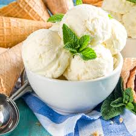

How to make Vanilla Ice Cream

This homemade ice cream is easy to make with just 4 ingredients: pure vanilla extract, milk, heavy whipping cream, and sugar.
This American or Philadelphia-style ice cream makes for a brighter, more pronounced vanilla flavor.
Ingredients
- 2 ¼ cups of milk
- 1 cup of heavy whipping cream
- ¾ cup white sugar
- Two teaspoons of vanilla extract
Preparation
- Cook the milk, cream, and sugar until the sugar has dissolved.
- Transfer the mixture to a measuring cup, then add the vanilla extract. Chill overnight.
- Pour the mix into an ice cream maker and churn according to the manufacturer's directions.
- Serve immediately or ripen in the freezer before serving.
- Enjoy!